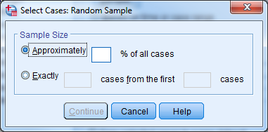
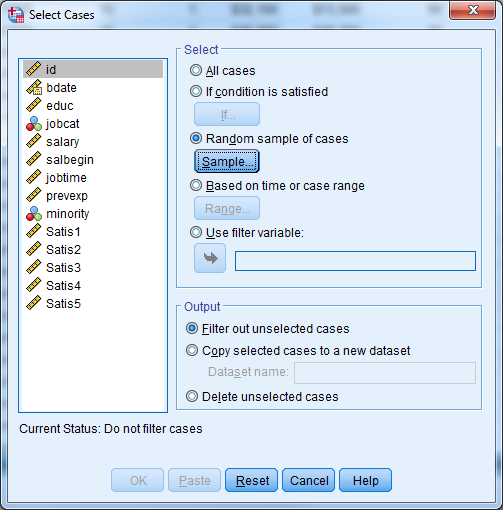
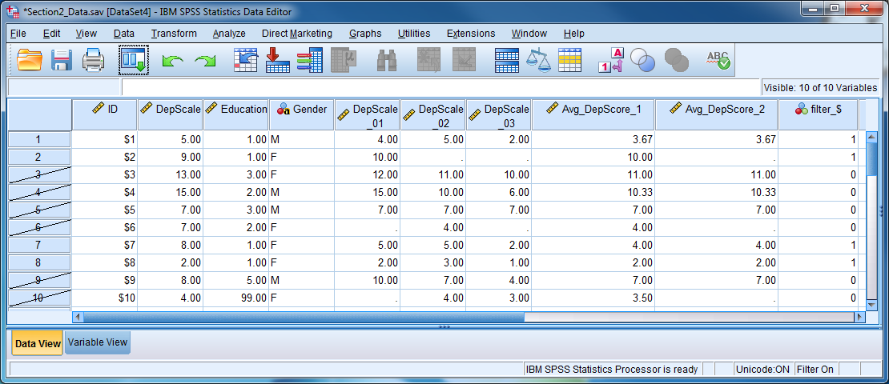
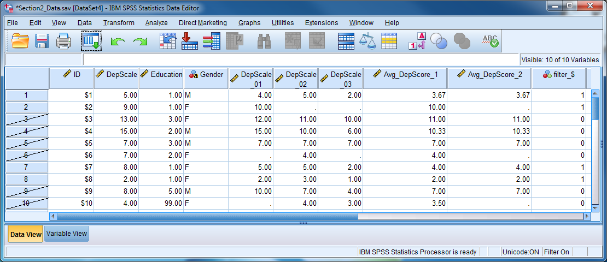
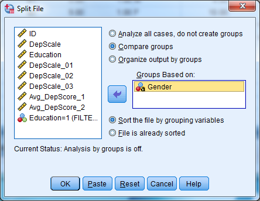
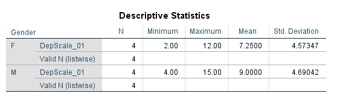

Chapter 4 Understanding Data Management Tasks
4.1 Sorting Cases
Sorting cases based on a particular variable is often necessary when managing data sets. Go to Data - Sort Cases to place the cases in order. Choose the variable that determines the ordering, and choose “Ascending” or “Descending”.

Selecting the ID variable and choosing “Ascending” will place the subject with the smallest ID number in the top row. The bottom row will contain data on the subject with the largest (highest) ID number.
When sorting by more than one variable, SPSS sorts the data initially based on the first variable. Within each value of that first variable, it sorts again based on the second variable. Make sure to select “Ascending” or “Descending” for each variable when you are sorting by multiple variables. Highlight the variable by clicking on it, and choose the correct ordering.
Suppose we want to sort by gender and then by age, with both in ascending order. Suppose the codes for gender are as follows:
0 male
1 female
SPSS would first put males at the top of the file and females at the bottom. SPSS would then sort by age within each gender group. The first rows of the data set would contain the youngest men in the sample and the last subjects at the bottom would be the oldest women in the sample.
4.2 Analyzing Subsets of Data
You can use the “Select Cases” command to instruct the software to calculate statistical results or summaries based on only some of the cases in the data set. You can define the subset by certain characteristics, such as women over age 40, or you can instruct the software to select a random sample of cases with size that you specify.
Note: The Select Cases procedure affects which cases that SPSS includes in analysis and output only. It has no effect on transformations of the data, such as computing, recoding, or counting.
Selecting cases involves turning on a filter that handles the inclusion of certain cases and the exclusion of others. When the filter is on, analyses or summaries will only use the selected cases. There will be a message “Filter On” at the bottom right of the Data Editor window whenever SPSS is using only selected cases.
The first time you invoke the “Select Cases” procedure, the software creates a variable called filter_$ in the data set. This variable is equal to 0 for excluded cases and 1 for included cases. SPSS deletes and then re-creates the filter_$ variable each time you run “Select Cases”.
Users can specify their own filter variable. He or she can use any variable as a filter as long as a value of 0 for that variable indicates exclusion and a value of 1 inclusion. Click the “Use filter variable” option under Data - Select Cases to do this; move your filter variable into the box.
4.2.1 If Condition is Satisfied
Go to Data - Select Cases" to use only some of the cases. Click “If condition is satisfied….” to select cases based on certain criteria. Then click the “If…” button to pull up a window in which you will state the condition. Some example conditions are:
gender=‘m’ *selects men only
age<=12 and sex=2 *selects children 12 and under of one sex only
marital=0 *selects all never married respondents
You can return to the data editor by clicking “Continue” and “OK”. Notice that certain rows have been “scratched” out by SPSS. SPSS has filtered out these cases because they did not satisfy the specified condition. Analyses will only use those cases that are not scratched out.


To return to the entire sample, go to Data - Select Cases, choose the radio button next to “All Cases,” and then click “OK”. The “Filter On” message will disappear and all results from that point on refer to the entire data set.
4.2.2 Randomly Selecting Subsets
You may examine a randomly selected portion of the data by clicking “Random Sample of Cases” in the “Select Cases” window. Then click the “Sample…” button. You can then give an approximate percentage. If you want to take an exact number of cases, first determine the total number of cases (rows) and place this number in the “from the first --- cases” segment of the dialogue box. If you would like to take a precise number of cases from, say, all women, or all children under twelve, then sort the data first so that the cases of interest occupy the first rows. Determine the last row that refers to a female, or to a child under twelve, and proceed as above.

Note: When SPSS selects cases randomly, repeated selections will be different even when everything specified by the user has stayed the same. An approximate 30% sample of cases will result in a different 30% each time the user repeats the procedure.
Helpful Hint: To use the same random selection of cases over and over again, first take the initial random sample. Then re-name the filter_$ variable to any name of your choosing. SPSS will leave the variable alone, and you can re-use the filter in consecutive SPSS sessions.
4.2.3 Output Options
At the bottom of the “Select Cases” dialogue box are three options:
Filter out unselected cases (recommended)
Copy selected cases to a new dataset (recommended)
Delete unselected cases (NOT RECOMMENDED)

If you set this to “Filter out unselected cases”, the unselected cases remain in the data set but the software temporarily excludes them from all analyses. If you choose the second option, SPSS copies the selected cases to a new dataset and you can save the dataset on your disk by assigning a file name. The content of your original dataset remains untouched with these two options.
If the you change the option to “Delete unselected cases”, unselected cases disappear from the data entirely. Be careful when permanently deleting cases, because you CANNOT undo the deletion. Make sure to first save your data file under a different name if you wish to permanently delete cases.
Try it: Use Section2_Data.sav. Select only observations with Education = 1 for analysis.
 

4.3 Analyzing Groups of Data Separately
When analyzing groups of cases separately, such as men and women, the Split File command spares you from having to repeatedly select different groups of cases.
The Split File command first sorts the data into groups based on a specified variable. After that, SPSS generates any requested output for each group separately. If we split the file based on gender and then request the mean current salary, we would receive a mean current salary for men and a mean current salary for women. A flag at the bottom right of the data editor will read “Split File On” when you are using this option.
You can use multiple variables to divide the data. If you use both gender and job category as grouping variables, for example, then SPSS will give all output for each job category group within each gender.
To use Split File:
Go to Data - Split File.
Click on “Compare Groups” or “Organize Output by Groups”.
Select variable(s) which divide the data into groups.
Click OK.
To turn off the Split File command, return to Data - Split File and click on “Analyze all cases, do not create groups”.

Try it: Use Section2_Data.sav. Obtain the descriptive statistics for DepScale_01 for males and females separately. Hint: Select Analyze - Descriptive Statistics - Descriptives.


4.4 Exercise 5 – Subsetting Data
Open Exercise5_Data.
Select male managers. What is their average age?
(You can obtain the average age by choosing Analyze - Descriptive Statistics - Descriptives and moving “Age of Respondent (age)” to the right hand side.)
Use the “Split File” procedure to get the average age for each job category.
4.5 Converting Data Formats
Different statistical methods frequently require different data formats. A repeated measures analysis of variance, for example, requires that data be in Wide format, while a linear mixed model requires that the data be in Long format. SPSS makes it easy to convert between the two formats. The examples below demonstrate how to use the wizard in SPSS.
To convert a dataset from one format to the other, first select “Data” and then “Restructure”. SPSS uses terminology that differs from conventional phrasing.
Wide to Long Variables into Cases
Long to Wide Cases into Variables
We will briefly discuss these two variations, before doing exercises together which include the instructions.
4.5.1 Wide to Long (AKA “Variables into Cases”)
S:\dept\Workshops\Workshop Slides\SPSS Intro for ESIN\Notebook\MODIFY\Slide13.JPG
There are seven steps in this Wizard:
Identify the restructuring plan to be from “Variables into Cases”.
Select the number of variable groups.
Select variables.
Create index variables (usually one).
Create one index variable.
Choose options.
Finish.
4.5.2 Long to Wide (AKA “Cases into Variables”)
S:\dept\Workshops\Workshop Slides\SPSS Intro for ESIN\Notebook\MODIFY\Slide27.JPG
There are five steps in this Wizard:
Identify the restructuring plan as “Cases into Variables”.
Select variables.
Sort the data.
Choose options.
Finish.
4.5.3 Exercise 6 – Restructuring I (Wide to Long)
Convert Exercise6_Data from “Wide” format to “Long” format
4.5.4 Exercise 7 – Restructuring II (Long to Wide)
Convert Exercise7_Data from “Long” format to “Wide” format
(Both exercises to be done together.)